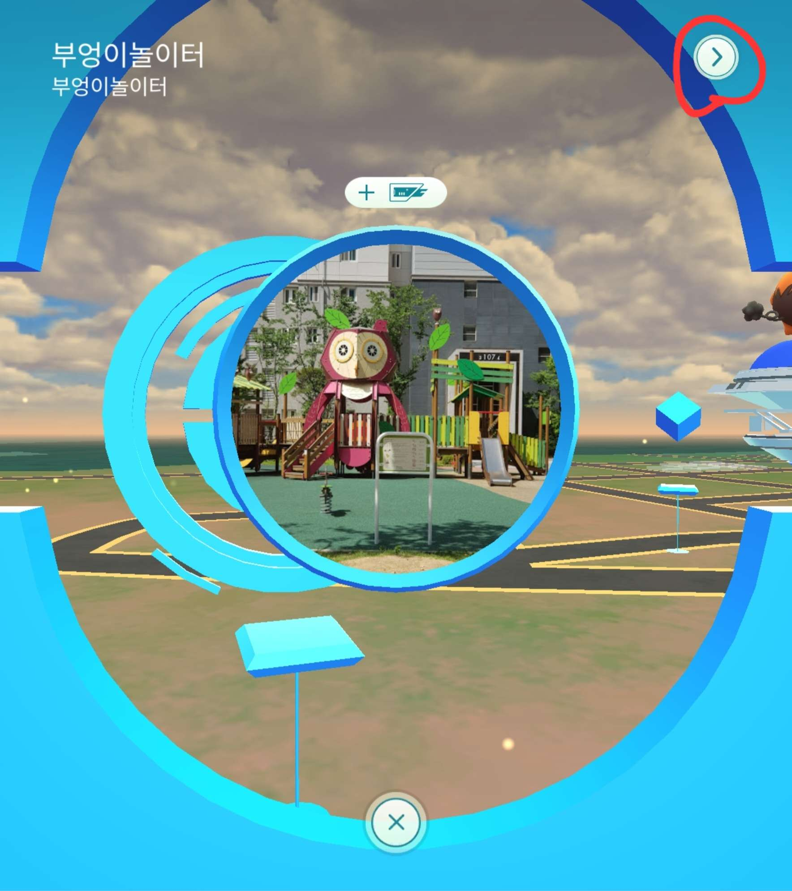
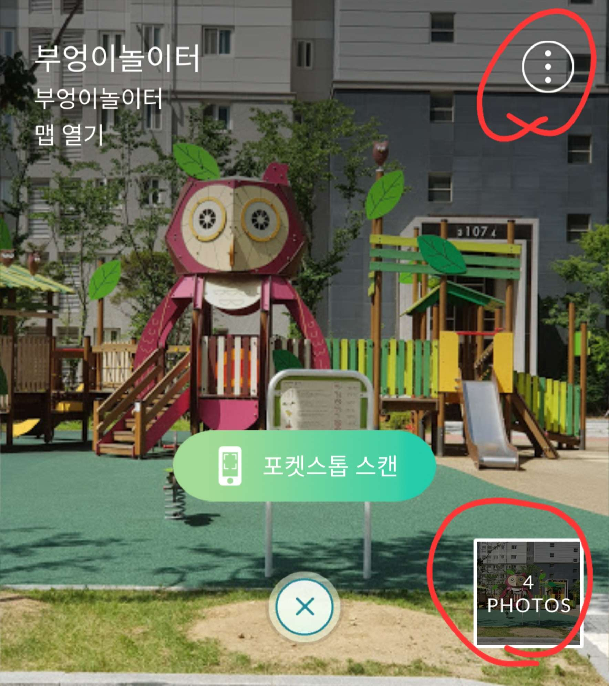
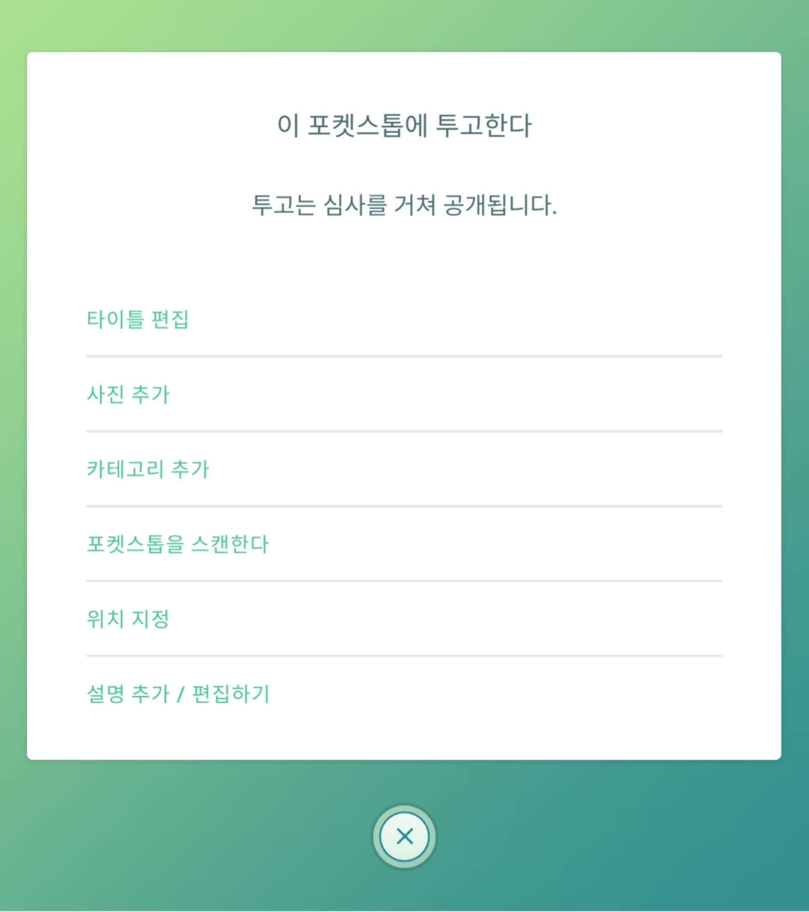

1장 셀에서 체육관은 셀 내에 스탑 갯수에 따라 생성 된다고 설명 드렸습니다.
임의로 스탑을 체육관으로 바뀌도록 설정하는 방법이 있습니다.
"ingress"라는 게임을 이용하는 방법도 있고,
게임 내에서 포켓몬고 내에서 작업을 하는 방법도 있습니다.
포켓몬고 내에서 작업하는 방법을 알아봅시다.
1. 원하는 스탑 탭
2. 우측 상단에 화살표 탭

우측 하단에 사진의 갯수가 표기됩니다.(중요)
3. 우측 상단에 메뉴 탭

4. 사진 추가 탭

이렇게 사진을 추가 함으로서 체육관 후보 설정을 할 수 있습니다.
추가된 사진의 수가 많을 수록 그 스탑이 체육관이 될 가능성이 높아집니다.
(이 방식으로 업로드 되는 사진도 심사의 대상이니 기준에 맞춰서 찍어주세요)
주의하실 점은 스탑이 체육관으로 한번 바뀌면 되돌리는 것이 까다로워지기 때문에
지역방에 소속되어 계시다면 지역방 분들과 함께 상의한 후에 설정하시는 것이 좋습니다.
"악용금지 입니다."